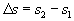
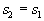
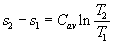
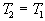

MODULE 11: ENTROPY
(fragments of the CD that comes with
Cengel&Boles's book "Thermodynamics", 3-d edition, McGraw-Hill,
1998)
Class notes (end)
Adiabatic, Reversible (Isentropic) Process
For an adiabatic process, one in which
there is no heat transfer, the entropy change is
If the process is adiabatic and reversible, the equality holds and the entropy change is
or on a per unit mass basis
The adiabatic, reversible process is a constant entropy process and is called isentropic. As will be shown later for an ideal gas, the adiabatic, reversible process is the same as the polytropic process where the polytropic exponent n = k = Cp/Cv.
The entropy-change and isentropic relations for a process can be summarized as follows:
1. Pure substances:
Any process: 
[kJ/(kgK)]
Isentropic process: 
2. Incompressible substances:
The change in internal energy and volume for an incompressible substance is
The entropy change now becomes
If the specific heat for the incompressible substance is constant, then the entropy change is
Any process: 
[kJ/(kg K)]
Isentropic process: 